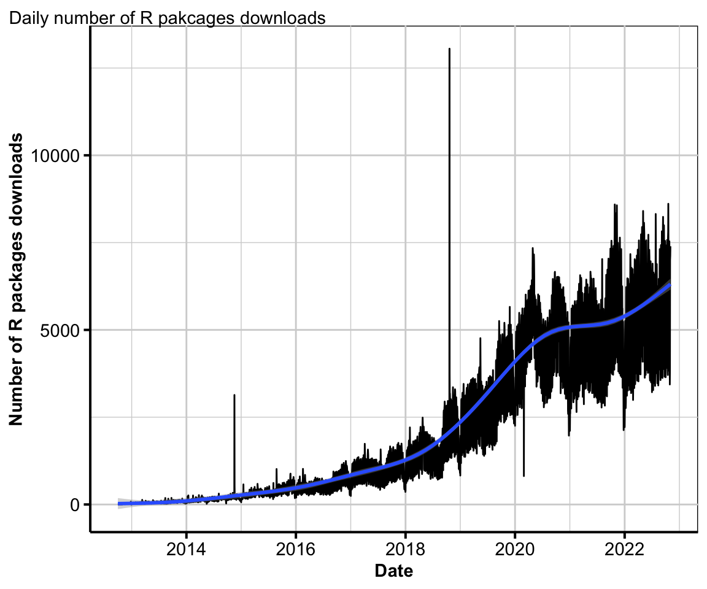

Exposition to evaluate quality of R packages / R package downloads: what does it mean?
![]()
Statistical programs are important aspect of translating statistical methods to usable products by the mass. In particular, the free, open-source software, R, is a popular and widely used programming language that was made by statisticians for statisticians, although its adoption has crossed into multiple disciplines that are not primarily trained in programming nor in statistics. With the growing recognition of software packages as alternate valuable research outputs, there is a need to understand the quality of software contributions. This paper is an exposition into quality metrics of R packages and possible implications into assessing its value for impact.
Introduction
- Current state of R, how big its growing in terms of developer and user community.
- With sea of packages, quality assurances needed.
- Academics are starting to recognise software packages as research output but what is constituted as quality contribution is unclear / not defined
- Make use of external metrics, e.g. downloads and other metadata (github, documentation, tests) as way of assessing this quality –> check what ROpenSci has
- Consider ranking of packages with respect to downloads within relevant domains, rather than raw downloads
- Download count can be surrogate of popularity but it can be manipulated (examples of how updates, our own experiments that show this). Alternative metrics, like mentions in stackoverflow, github stars, tests.
Today R is greatly enhanced by its thriving community that include dedicated group of core developers, over 16.1K authors that contributed directly or indirectly to the development of R-packages, and millions of users worldwide. There are now over 18.8K R-packages and if the past trend is any indicator of future develoments, we would continue to see a rising number of contributed R packages.
There is a growing recognition of software packages as a valuable output by academic institutions and companies.
“R packages are the result of scholarly activity and as such constitute scholarly resources which must be clearly identifiable for the respective scientific communities.” said by Hornik, Murdoch, and Zeileis (2012). The R community has grown in the past two decades. Since R was first introduced in the August of 1993 with its first official release in the June of 1995 (Ihaka and Gentleman 1996), there was only a small group of core developers. In April of 1997, the Comprehensive R Archive Network (CRAN) was established as the official R-packages repository, with 3 mirror sites (Hornik 1997). After years of continues thrive of R packages developments, today R is greatly enhanced by over 18.8K R-packages contributed by 16.1K of developers all over the world. Among all the available R packages, RStudio has the copyright to 232 R packages. Majority of the R packages are developed and owned by individual author who has been contributing and sharing their knowledge with the public. It is important to recognise the contribution that these R package developers made to the scientific and academic communities. One aspect of the quality metrics for R package is number of downloads. Li (2020) suggests that download counts are a popular way that indicates a package’s importance and quality. In general, the more downloads, the more important and popular the package gets. There are a few different source repositories to install and download R-packages which includes Bioconductor, Gitlab, GitHub, R-Forge and 106 CRAN mirrors in 49 regions. Of all the CRAN mirrors, the daily download counts for each package is only readily available from the RStudio CRAN mirror. This is also the default CRAN mirror if not deliberately chosen a CRAN mirror in RStudio (Wickham 2013). The RStudio CRAN mirror is likely to have the most users as the default mirror for R users. From the cranlogs package, the number of downloads for each package is easily assessable.

Figure @ref(fig:totaldownload) shows the daily total number of R packages downloads from October 2012 to July 2021. With the number of downloads increasing throughout time, it suggests that R users has been growing overtime and R packages has become wildly adapted. The two spikes happened in 2014 and 2018 are unusual and it might reveal more information behind the enormous number of R package downloads. From a closer look into the first spike which happened on 17th of November 2014, there are 3.1M R packages downloaded on that day comparing with 162.4K the day before and 536.4K the day after. Looking into the individual IP address for all the downloads, one particular Indonesia IP is responsible for 91.31% of the R packages downloads on 17th of November 2014. This suspicious amount of downloads from one IP address can be considered as non-human activity. The second unusual spike happened on October 21st 2018. Total R packages download reached 16.2M on that day. The one particular Indonesia IP address downloaded the same number of R packages as in 17th of November 2014 while a few US IP addresses is responsible for 11.7M of tidyverse downloads. This constitute 72.19 % of the total R packages downloads on the 21st of October 2018. The two uncommon R packages downloads spikes suggests that behind each R package download, it might not be an actual user. It is likely that computers are set to repetitively downloading some R packages. These bots downloads would inflate the actual R package downloads by human users. Thus, the number of R package downloads might not be an accurate benchmark for representing the quality of the R package as it can be manipulate.
In order to remove the potential bots downlands that inflates that number of R package downloads, the data used in this research removes the duplicate downloads from the same computer ip address with the same operating system and architecture. After